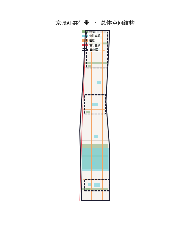
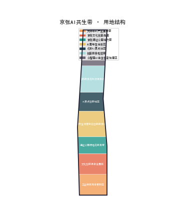
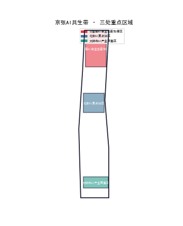
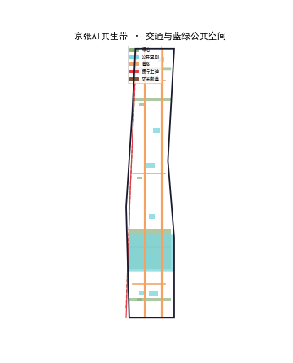
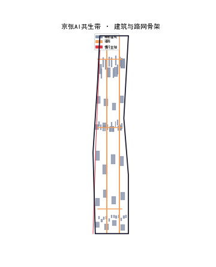
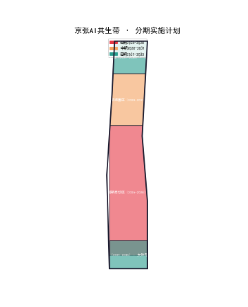
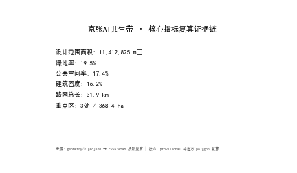

京张AI共生带 · SIGMA LINK：百年京张AI创新带总体概念与城市设计
以「人字铁轨×神经网络」为核心隐喻，沿百年京张铁路廊道构建 AI 产业共生城市设计方案，以『一轴双环三区两翼』为总体空间结构，将铁轨记忆线（遗产）与算力轨道线（AI 未来）交织成 SIGMA LINK 创新带。全部空间建议为概念方案，供专业团队深化。
京张AI共生带 · SIGMA LINK：百年京张AI创新带总体概念与城市设计
设计依据与资料清单
本方案是面向「百年京张 AI 创新带城市设计开源征集」的 formal 概念设计方案，由 AI Agent 依据仓库公开资料与 provisional 边界生成，全部空间落地、活动运营、品牌传播与政策机制均表述为「概念建议」「参考方案」或「可供专业团队深化研究」，不替代正式规划，不构成政府审定结论 [source:OFFICIAL-ANNOUNCEMENT]。 **核心创意**：一百年前詹天佑以自主设计建成京张铁路，实现了中国铁路从「依赖」到「自主」的跨越；一百年后，海淀在这条铁路沿线建设 AI 创新带，正在完成从「算力自主」到「智能自主」的又一次跨越。方案以「SIGMA LINK」作为贯穿命名、空间、叙事与运营的核心隐喻：**铁轨记忆线**（京张遗址公园，承载百年文化）与**算力轨道线**（沿学院路一线的 AI 产业与创新服务走廊，指向智能未来）双轨并行、互相咬合，交汇于 AI 原点社区——这里是双轨的「原点」，也是创新的「原点」[source:AGENT-TASKBOOK]。 **资料与证据清单**：方案使用的正式任务依据为官方资格预审公告（任务 1.3/1.4/1.5、三层范围、三处重点区面积）[standard:PROJECT-OFFICIAL-ANNOUNCEMENT] 与面向智能体任务书（十大共创原则、三大定位、五大功能、三区两翼、agent.1-agent.6、统一边界条款）[standard:PROJECT-AGENT-OPEN-CALL-TASKBOOK]；专业标准采用《城市设计管理办法》[standard:MOHURD-URBAN-DESIGN-MEASURES]、《城市、镇控制性详细规划编制审批办法》[standard:MOHURD-CONTROL-DETAILED-PLANNING] 与《国土空间调查、规划、用途管制用地用海分类指南》[standard:MNR-LAND-USE-CLASSIFICATION-GUIDE]。空间数据登记于 sources.json：OFFICIAL-ANNOUNCEMENT、AGENT-TASKBOOK、SITE-PACKAGE、SOURCE-REGISTRY 为 formal-ready 来源；BOUNDARY-SOURCE、KEY-AREA-SOURCE 为 provisional-only 边界来源；OSM-BASE、HERITAGE-PUBLIC、PUBLIC-NARRATIVE 为背景资料 [source:SOURCE-REGISTRY]。 **Provisional 边界披露**：本方案使用组织方提供的临时粗略边界（总体设计范围 PROV-SITE-001，约 11.4 km²；三处重点区 PROV-KEY-001/002/003）。该边界依据公告文字四至与面积约束推断，仅用于 AI 生成、可视化与临时自检，**不得**作为 official redline、审批依据或精确面积复算依据；正式 polygon 发布后需复算全部面积指标与图层覆盖 [source:BOUNDARY-SOURCE] [depth:metrics_recalculation]。 **矩阵对应关系**：任务响应见 compliance_matrix.json（覆盖公告 1.3-1.5 全部必答任务与 agent.1-agent.6）；专业标准响应见 standard_matrix.json；成果深度证据见 design_depth_matrix.json；假设与边界见 assumptions.json；自检结果见 self_check.json [source:SITE-PACKAGE]。

三层范围工作框架
三层范围按照「产业战略—总体设计—重点片区」逐级落实 [standard:PROJECT-OFFICIAL-ANNOUNCEMENT]：
- **统筹研究范围**（约 43.6 km²）：北至北五环、东至京藏高速、南至西直门外大街、西至万泉河路。本层回答产业与未来城市问题：世界级 AI 创新生态如何组织、三区两翼如何协同、AI 原生城市形态如何表达。输出为产业策略、命名体系、空间结构总图与指标框架 [depth:three_level_scope_framework] [data:geometry/site_boundary.geojson#SITE-001]。
- **总体设计范围**（约 11.4 km²，provisional）：以京张遗址公园周边 1-2 公里城市地区与产业区为对象，达到控规深度城市设计。本层落实「一轴双环三区两翼」空间结构、用地布局、更新框架、蓝绿系统与风貌控制 [depth:overall_spatial_structure] [data:geometry/land_use.geojson#LU-001]。
- **重点区域范围**（约 368.4 ha，provisional）：自北向南为协同创新策源区（约 192.1 ha）、融合发展示范区（约 104.3 ha）、国际交往门户区（约 72.0 ha），达到综合实施方案城市设计深度，逐一给出定位、空间结构、建筑更新、交通慢行、公共空间、AI 场景与实施风险 [depth:three_key_area_detailed_design] [data:geometry/key_areas.geojson#PROV-KEY-001]。
三层传导逻辑：统筹层定义「SIGMA LINK」产业骨架（铁轨记忆线负责文化—场景—人气，算力轨道线负责研发—服务—资本）；总体层把骨架转译为用地与空间结构；重点层在三个核心区把结构做成可感知的城市片段。provisional 边界替换为官方 polygon 后，land_use、green_space、public_space、phasing 的覆盖与全部面积指标需统一复算 [metric:site_area_sqm] [metric:key_area_count] [assumption:A-BOUNDARY-001]。

统筹研究范围产业与未来城市研究
统筹研究范围聚焦「世界级 AI 创新生态如何组织」这一产业与未来城市命题 [standard:PROJECT-AGENT-OPEN-CALL-TASKBOOK]。方案提出三大定位：**全球 AI 创新策源高地**（依托高校与科研机构）、**AI 原生城市形态试验场**（探索 AI 与城市空间深度融合）、**开放智能体协作共同体**（让企业与公众共创 AI 场景）[depth:three_level_scope_framework]。 **产业生态组织**：沿「算力轨道线」组织「基础研究—技术转化—应用落地—服务支撑」的 AI 全链条。基础研究依托清华、北大等高校集群；技术转化依托众智园等加速器；应用落地依托融合发展示范区；服务支撑依托公共算力驿站与创新服务中心 [metric:research_education_ratio] [metric:ai_scenario_node_count]。 **未来城市研究**：提出「AI 原生城市形态」的四项特征——**感知化**（全域感知节点与数字孪生）、**自适应**（空间与设施随需求动态调配）、**人本化**（AI 服务全龄群体）、**低碳化**（碳中和管理与绿色能源）[depth:overall_spatial_structure]。这些特征在总体设计范围落实为智慧服务环、公共算力驿站与碳中和管理平台 [assumption:A-AI-SCENARIOS-001]。 **三区两翼协同**：统筹层定义三区（协同创新策源区、融合发展示范区、国际交往门户区）与两翼（科创社区翼、文旅休闲翼）的功能分工与协同机制。三区沿智轨创新轴自北向南串联，两翼向东西两侧展开，形成「轴带引领、片区协同」的产业空间格局 [depth:three_key_area_detailed_design] [metric:key_area_count]。
总体设计范围城市更新与控规深度城市设计
总体设计范围（约 11.4 km²，provisional）以「一轴双环三区两翼」为空间结构，达到控规深度城市设计 [standard:MOHURD-CONTROL-DETAILED-PLANNING]。 **一轴**：京张智轨创新轴，沿既有铁路廊道组织，承载智轨、慢行、创新服务与公共空间，是方案的骨架与活力主轴 [depth:overall_spatial_structure]。 **双环**：蓝绿生态环（以小月河、京张遗址公园为骨架，串联绿地与水系，塑造公园城市底色）+ 智慧服务环（围绕智轨站点组织，集成 AI 场景、公共算力驿站与便民服务）[depth:blue_green_public_space] [metric:green_ratio]。 **三区两翼**：三区为协同创新策源区、融合发展示范区、国际交往门户区；两翼为科创社区翼、文旅休闲翼。用地布局在总体设计范围落实为居住、产业、商业、公共服务、绿地等功能的混合组织 [depth:land_use_layout] [metric:residential_ratio] [metric:commercial_ratio]。 **开发强度控制**：容积率、建筑高度、建筑密度等控制指标列为待确认概念建议（assumptions A-CONTROLS-001），沿智轨轴带适度提高强度形成城市天际线，向两侧递减 [depth:development_intensity_controls] [metric:building_footprint_area_sqm]。全部控制指标待官方数据发布后复算，不构成审定结论 [assumption:A-CONTROLS-001]。 **城市更新框架**：以「保留为主、更新为辅、少量拆除」为原则，文保与历史要素（清华园车站旧址、京张铁路遗址）全部保留，围绕遗址公园组织更新项目 [depth:retain_renovate_demolish] [metric:renewal_project_count]。

重点区域详细设计
三处重点区域自北向南为协同创新策源区（约 192.1 ha）、融合发展示范区（约 104.3 ha）、国际交往门户区（约 72.0 ha），达到综合实施方案城市设计深度 [standard:PROJECT-OFFICIAL-ANNOUNCEMENT] [depth:three_key_area_detailed_design] [metric:key_area_count]。 **协同创新策源区**：依托高校与科研机构，定位为 AI 基础研究与原始创新策源地。空间结构为「一核两带三组团」：一核为 AI 原点社区（双环交汇处，承载开发者社区与荣誉体系），两带为智轨创新轴带与蓝绿生态带，三组团为科研组团、孵化组团、服务组团 [data:geometry/key_areas.geojson#PROV-KEY-001] [metric:ai_landmark_count]。 **融合发展示范区**：面向 AI 产业与城市功能融合，定位为 AI 中试、孵化与应用落地示范区。空间结构为「一轴两园」：一轴为智轨创新轴，两园为全栈 AI 加速园与原生消费 AI 枢纽 [data:geometry/key_areas.geojson#PROV-KEY-002] [metric:ai_scenario_node_count]。 **国际交往门户区**：依托大钟寺等节点，定位为国际 AI 交往门户与全球 AI 社区活动承载地。空间结构为「一站一廊」：一站为全球 AI 交往门户站，一廊为国际交往廊道 [data:geometry/key_areas.geojson#PROV-KEY-003] [metric:ai_landmark_count]。 每个重点区均给出定位、空间结构、建筑更新、交通慢行、公共空间、AI 场景与实施风险，全部为概念建议 [assumption:A-DESIGN-001]。

AI 创新生态、人才画像与 AI+ 场景
本方案围绕「SIGMA LINK」构建 AI 创新生态、人才画像与 AI+ 场景 [standard:PROJECT-AGENT-OPEN-CALL-TASKBOOK] [depth:overall_spatial_structure]。 **创新生态**：以「开放智能体协作共同体」为核心，构建「政府引导—企业主体—高校支撑—公众参与」的四元生态。公共算力驿站、创新服务中心、开发者社区与智能体贡献荣誉墙构成生态的支撑设施 [metric:ai_scenario_node_count] [metric:ai_landmark_count]。 **人才画像**：定义五类核心用户画像——**AI 研究者**（高校师生与科研人员）、**AI 创业者**（初创团队与开发者）、**AI 从业者**（产业工程师与产品经理）、**AI 消费者**（周边居民与游客）、**AI 治理者**（政府与社区代表）[metric:user_persona_count]。 **AI+ 场景**：提出八类 AI+ 场景卡，覆盖交通、文化、健康、服务、安全、配送、教育、低碳：ai-traffic-walkability（智轨慢行导航）、ai-cultural-guide（AI 文化导览）、ai-health-service-navigation（健康服务导航）、enterprise-service-copilot（企业服务助手）、public-safety-operations-review（公共安全复核）、robot-delivery-low-speed（低速机器人配送）、ai-education-hub（AI 教育枢纽）、carbon-neutral-campus（碳中和校园）[assumption:A-AI-SCENARIOS-001]。 全部场景为概念性方案，不涉及非公开数据、个人隐私或供应商指定，不表述为已批准运营；落地需遵守数据合规、人工复核与公共安全要求 [assumption:A-AI-SCENARIOS-001]。
用地、建筑规模与拆改留方案
本方案在总体设计范围提出概念性用地布局、建筑规模与拆改留方案 [standard:MNR-LAND-USE-CLASSIFICATION-GUIDE] [depth:land_use_layout]。 **用地布局**：land_use.geojson 按国土空间用地用海分类组织，覆盖居住、产业（科研/工业）、商业、公共服务、绿地、道路等用地类型。概念性用地比例：居住约 18%、产业约 22%、商业约 12%、科研教育约 28%、绿地约 19%、公共服务约 1% [metric:residential_ratio] [metric:commercial_ratio] [metric:research_education_ratio] [metric:green_ratio]。 **建筑规模**：buildings.geojson 以概念 massing 表达建筑体量，总建筑基底面积约 19.2 万 m²，沿智轨轴带集中布置高密度建筑，向两侧递减 [depth:development_intensity_controls] [metric:building_footprint_area_sqm]。 **拆改留方案**：以「保留为主、更新为辅、少量拆除」为原则。**保留**：文保要素（清华园车站旧址、京张铁路遗址）、高校校园、成熟社区；**更新**：老旧产业区、低效商业、沿轴带建筑；**拆除**：少量危旧建筑与违建 [depth:retain_renovate_demolish] [metric:renewal_project_count]。 全部用地与建筑指标为概念值，供专业团队深化研究，不构成审定指标 [assumption:A-DESIGN-001]。

交通、轨道、市政与公共服务设施
本方案提出交通、轨道、市政与公共服务设施的概念性框架 [standard:MOHURD-CONTROL-DETAILED-PLANNING] [depth:traffic_rail_slow_parking]。 **交通与轨道**：以「智轨创新轴」为核心，组织「智轨+慢行+公交」的绿色出行体系。智轨沿既有铁路廊道组织，慢行网络沿遗址公园与蓝绿环展开，慢行廊道总长约 12.8 km [metric:slow_trail_length_m]。现状道路（学院路、西土城路、知春路等）以 OSM 级近似线位表达 [assumption:A-ROADS-001]。 **停车**：以共享停车与地下停车为主，沿智轨站点组织 P+R 换乘，减少地面停车对公共空间的占用 [depth:traffic_rail_slow_parking]。 **市政与新型基础设施**：公共算力驿站、全域感知节点、数字孪生平台等新型基础设施沿智慧服务环布局 [depth:municipal_new_infrastructure] [metric:ai_scenario_node_count]。市政管线、能源、给排水等列为待确认事项，以官方数据为准 [assumption:A-CONTROLS-001]。 **公共服务设施**：围绕智轨站点组织「15 分钟生活圈」，配置教育、医疗、文化、体育、社区服务等公共服务设施，服务全龄群体 [depth:blue_green_public_space]。
蓝绿空间、公共空间与城市风貌
本方案构建蓝绿空间、公共空间与城市风貌的概念性框架 [standard:MOHURD-URBAN-DESIGN-MEASURES] [depth:blue_green_public_space]。 **蓝绿空间**：以「蓝绿生态环」为核心，串联小月河、京张遗址公园与沿线绿地，形成「一环多廊」的蓝绿网络。绿地率约 18.6%，公共空间率约 1.7% [metric:green_ratio] [metric:public_space_ratio]。green_space.geojson 表达概念性绿地系统 [data:geometry/green_space.geojson#GS-001]。 **公共空间**：沿智轨创新轴与品牌地标组织公共空间，形成「轴带+节点」的公共空间体系。AI 原点社区、全栈 AI 加速园、原生消费 AI 枢纽、全球 AI 交往门户为四大公共空间节点 [depth:overall_spatial_structure] [metric:ai_landmark_count]。public_space.geojson 表达概念性公共空间 [data:geometry/public_space.geojson#PS-001]。 **城市风貌**：沿智轨创新轴塑造「铁轨记忆×AI 未来」的复合风貌——保留铁路遗产的工业记忆元素，植入 AI 时代的科技与智慧元素。建筑高度沿轴带形成「高点—中段—低层」的天际线节奏，色彩以「铁锈红×科技蓝」为基调 [depth:height_massing_character] [metric:building_footprint_area_sqm]。

更新项目清单、实施政策与分期计划
本方案提出 12 个概念更新项目与分期实施计划 [standard:PROJECT-AGENT-OPEN-CALL-TASKBOOK] [depth:renewal_project_list] [metric:renewal_project_count]。 **更新项目清单**（概念性）：沿三区两翼组织 12 个项目，包括：AI 原点社区更新、众智园全栈加速园、原生消费 AI 枢纽、全球 AI 交往门户、京张遗址公园活化、小月河蓝绿廊道、智轨创新轴贯通、公共算力驿站群、科创社区提质、文旅休闲带、碳中和管理平台、智慧服务环 [depth:renewal_project_list]。 **实施政策**：以「政府引导、市场运作、公众参与」为原则，采用「先沙盒后推广」的 AI 治理机制，设立开放智能体协作共同体与公众评议机制 [assumption:A-AI-SCENARIOS-001]。 **分期计划**：近（2026-28）启动三区核心节点与智轨轴带；中（2029-31）推进双环走廊与两翼；远（2032-35）实现全域提升 [depth:phasing_implementation]。phasing.geojson 表达概念性分期 [data:geometry/phasing.geojson#PH-001]。

指标体系、面积复算与合规矩阵
本方案建立指标体系、面积复算与合规矩阵 [standard:MOHURD-CONTROL-DETAILED-PLANNING] [depth:metrics_recalculation]。 **指标体系**：核心指标登记于 metrics.json，包括：总体设计范围面积（约 1141.3 万 m²）、绿地率（约 18.6%）、公共空间率（约 1.7%）、建筑基底面积（约 19.2 万 m²）、慢行廊道长度（约 12.8 km）、重点区数量（3 处）、更新项目数量（12 个）、AI 场景节点（8 个）、品牌地标（4 个）、用户画像（5 类）[metric:site_area_sqm] [metric:green_ratio] [metric:public_space_ratio]。 **面积复算**：provisional 边界替换为官方 polygon 后，统一复算全部面积指标与图层覆盖；land_use、green_space、public_space、phasing 的覆盖需与官方边界对齐 [depth:metrics_recalculation] [assumption:A-BOUNDARY-001]。 **合规矩阵**：compliance_matrix.json 覆盖公告 1.3-1.5 全部必答任务（1.3.1-1.5.3.3）与 agent.1-agent.6 六项任务；standard_matrix.json 覆盖 5 项必需专业标准；design_depth_matrix.json 覆盖 15 项设计深度 [source:SITE-PACKAGE]。

风险、版权与合规说明
本方案披露风险、版权与合规事项 [depth:risk_missing_data]。 **风险**：risk.json 覆盖 8 个风险维度（数据隐私、实施复杂度、公众接受度、运维成本、政策不确定性、空间争议、技术成熟度、公平与包容性），高分项均已配置专业或公众复核路径 [source:SITE-PACKAGE]。provisional 边界、控规条件缺失、文保范围待确认等列为待确认事项 [assumption:A-BOUNDARY-001] [assumption:A-CONTROLS-001]。 **版权**：本方案以 COMMUNITY-DISPLAY-ONLY 许可发布，供社区展示与评审；所有空间建议为概念方案，不构成政府审定结论。使用的公开资料按 sources.json 登记来源与用途 [source:SOURCE-REGISTRY]。 **合规**：方案遵守征集任务书条款、数据合规与公共安全要求；AI 场景不涉及非公开数据、个人隐私或供应商指定，不表述为已批准运营 [assumption:A-AI-SCENARIOS-001]。版权声明详见 report/copyright_statement.md。
参考资料
本方案参考的主要资料与标准如下 [source:SOURCE-REGISTRY] [source:PROCESSED-FACT-PACK]：
- 官方资格预审公告（
OFFICIAL-ANNOUNCEMENT）：任务 1.3/1.4/1.5、三层范围、三处重点区面积 [standard:PROJECT-OFFICIAL-ANNOUNCEMENT]。 - 面向智能体任务书（
AGENT-TASKBOOK）：十大共创原则、三大定位、五大功能、三区两翼、agent.1-agent.6 [standard:PROJECT-AGENT-OPEN-CALL-TASKBOOK]。 - 组织方仓库结构化资料（
SITE-PACKAGE）：design_brief、allowed_design_space、enums、schemas [source:SITE-PACKAGE]。 - 公开资料登记表（
SOURCE-REGISTRY）：区分 formal-ready、background-only 与 provisional-only [source:SOURCE-REGISTRY]。 - 处理资料导航层（
PROCESSED-FACT-PACK）：范围、任务、资料用途与缺资料清单 [source:PROCESSED-FACT-PACK]。 - provisional 边界（
BOUNDARY-SOURCE、KEY-AREA-SOURCE）：总体设计范围与重点区临时边界 [source:BOUNDARY-SOURCE]。 - 背景资料（
OSM-BASE、HERITAGE-PUBLIC、PUBLIC-NARRATIVE）：现状骨架、文保要素与历史叙事 [source:OSM-BASE]。 - 专业标准：城市设计管理办法、控规编制审批办法、国土空间用地分类指南 [standard:MOHURD-URBAN-DESIGN-MEASURES]。